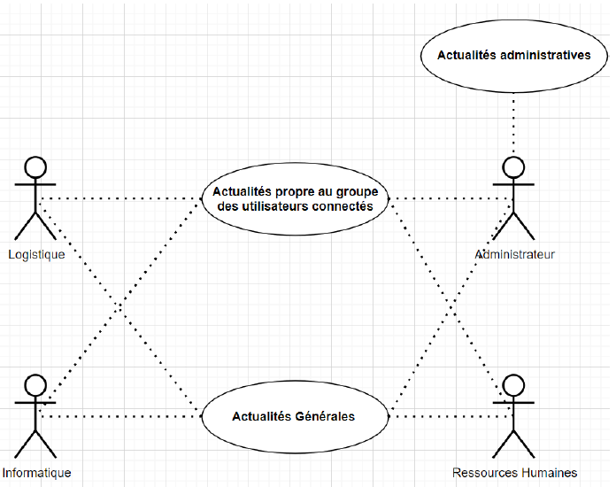
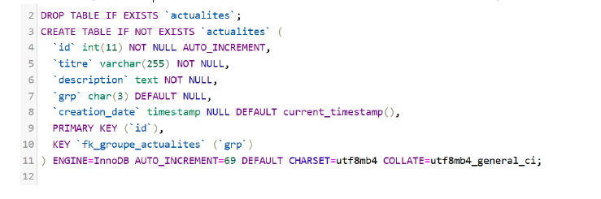
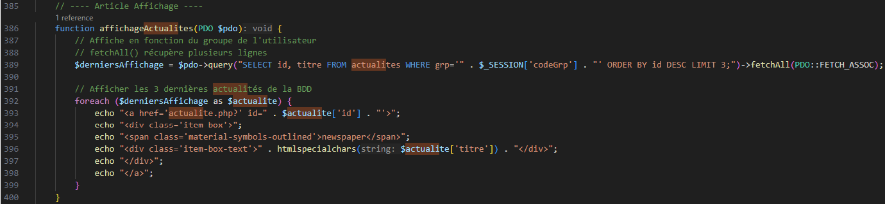
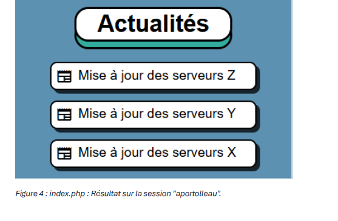

Dans cette mission, nous avons mis à jour notre diagramme UML pour intégrer les nouveaux cas d'utilisation concernant les actualités et les groupes d'utilisateurs.
Nous avons mis à jour notre diagramme UML pour inclure les interactions des différents groupes d'utilisateurs avec la nouvelle table des actualités. Les informations varient selon les actualités propres à chaque groupe et les plus importantes. Seuls les administrateurs peuvent consulter toutes les actualités.
Voici la requête SQL pour créer la table « actualites » dans la base de données :
Cette requête crée une table « actualites » avec les colonnes nécessaires, notamment : id (clé primaire et auto-incrémentée), titre, description, grp (groupe de l'utilisateur) et creation_date (date et heure de la création).
Dans le fichier « index.php », la section concernant les actualités est située entre les lignes 273 et 286. Nous avons ajouté une fonction pour afficher les 3 dernières actualités en fonction du groupe de l’utilisateur :
Cette fonction récupère les 3 dernières actualités associées au groupe de l'utilisateur, puis les affiche en utilisant une boucle FOREACH.
Voici à quoi ressemble l'affichage des actualités pour un utilisateur du groupe « INF » (informatique) :
